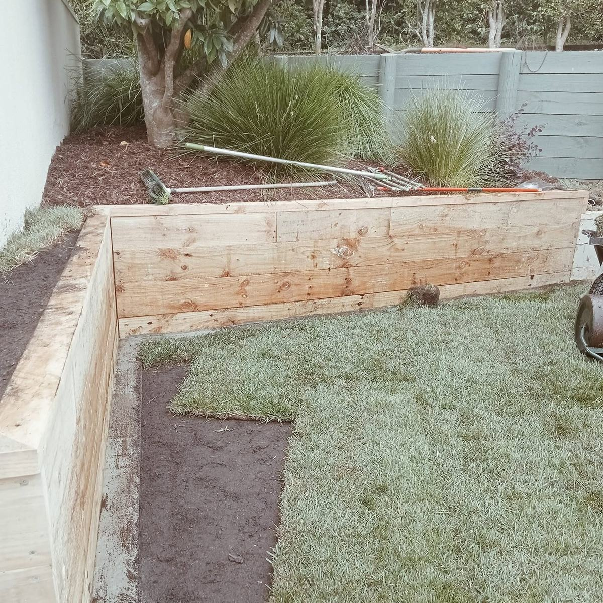
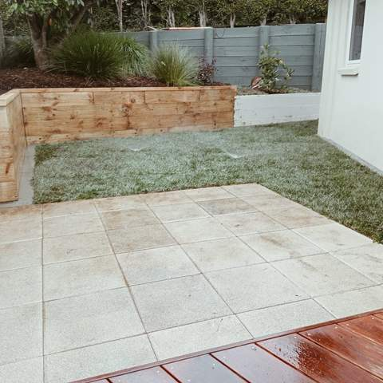
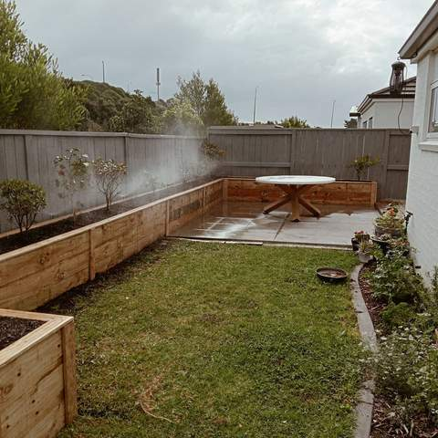
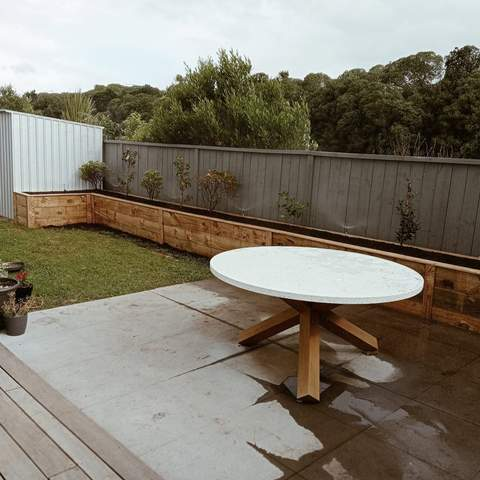
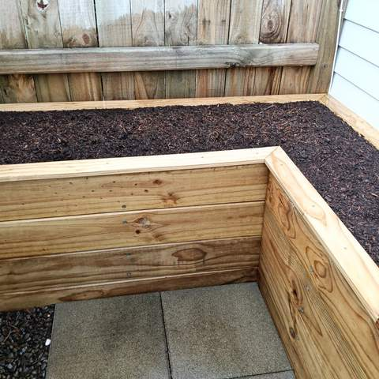
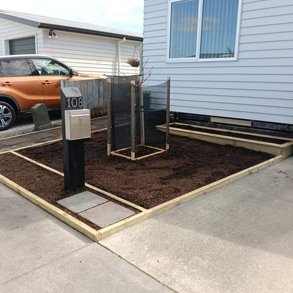
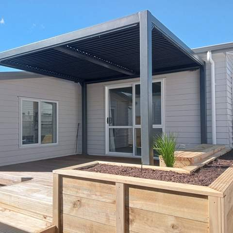

Retaining Wall Builders in Tauranga
Timber and block retaining walls for sloping Tauranga sections, built with the drainage that keeps them standing.
Retaining walls that suit your section
A lot of Tauranga is built on slopes: hillside streets in Welcome Bay and Ohauiti, terraced sections in Bethlehem and Pyes Pa, and new subdivisions cut into clay. A well-built retaining wall turns an unusable bank into flat lawn, garden or space for a deck. Straight Line Landscaping builds everything from low garden edging and raised planter beds to walls that hold back a bank.
Timber or block?
Timber walls, built from treated pine posts with sleepers or rails, are the most common choice on residential sections. They go up quickly, handle curves and steps, and suit a natural garden. The in-ground posts need a higher treatment level than the rails. Concrete block walls cost more up front but give a crisp, permanent finish that suits modern homes and boundary walls. Matt will talk you through which makes sense for the height, the look you want and your budget.
Drainage is what makes a wall last
Most retaining walls that fail do so because water builds up behind them. Every wall needs free-draining backfill, a perforated drain coil at the base and somewhere for that water to go. With Bay of Plenty rainfall and heavy clay soils this matters even more, so drainage is part of the quote, not an extra.
Do you need building consent?
In New Zealand, walls retaining more than 1.5 metres of ground generally need building consent and engineering input. Lower walls can need consent too if they carry extra load above them, known as surcharge, such as a driveway, a building or sloping ground. If your wall is anywhere near these limits, Matt will flag it at the site visit so you know before work starts.
Retaining and planter walls by Straight Line
Real photos from Matt's recent jobs. See all projects.

Timber retaining wall with planting above, new lawn and paved patio 
Timber retaining planter beds around a lawn and concrete patio 
Concrete patio with round table, lawn and timber planter beds along the fence 
Timber retaining edge around a mulched garden bed 
Timber-edged garden bed around a letterbox post 
Deck with raised timber planter box under a black pergola
How we work
A simple, four-step process from first call to final tidy-up.
Enquiry
Call or text Matt on 020 4006 6910, or send the quote form. A few photos of the area help.
Site visit & itemised quote
Matt comes out, measures up and talks through options, then sends a written quote broken down by item.
Build
Work is done in the right order (earthworks, walls and drainage, irrigation, then turf, decking and planting).
Tidy handover
The site is cleaned up and you get a walk-through, plus care tips such as a watering plan for new lawn.
Retaining walls: common questions
How much does a retaining wall cost in Tauranga?
It depends on the height and length of the wall, the material, how much soil has to be dug out and taken away, and access to the site. Matt measures up on site and gives you a free, itemised quote, so you can compare timber and block side by side.
Do I need consent for a retaining wall?
Generally, walls retaining more than 1.5 metres of ground need building consent, and so can lower walls that support a surcharge such as a driveway, building or slope above. Matt will tell you at the site visit if your wall is likely to need consent or engineering.
Which lasts longer, timber or concrete block?
Both last for many years when they are built properly. Block walls are more permanent and need less upkeep, while a timber wall with the right treatment levels and good drainage is a cost-effective long-term option. Drainage and build quality matter more than the material.
Do you build raised garden beds and planters?
Yes. Timber planter beds and low garden walls are a big part of what Straight Line builds, often alongside a new lawn, patio or deck.
Can you work on a section with tight access?
Usually, yes. A mini digger and tracked dumper can get through narrow side yards, and existing lawns can be protected with boards while gear moves through. Matt will check access at the site visit.
Often combined with
Got a bank that needs holding back?
Get a free, itemised quote from Matt. Serving Tauranga and the Western Bay of Plenty.